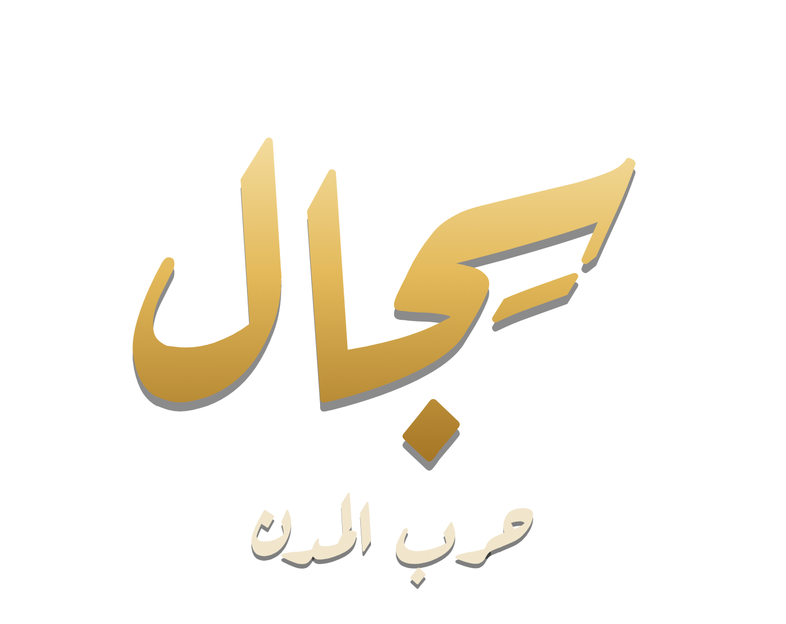
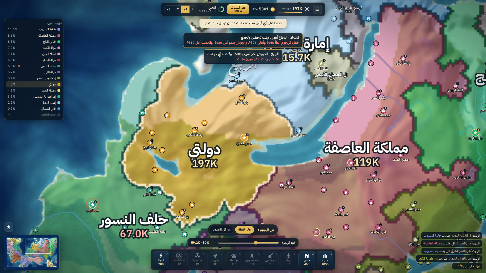

لعبة حرب استراتيجية سعودية على المتصفح، للجوال والكمبيوتر

سِجال لعبة حرب استراتيجية على الخريطة، تنلعب من المتصفح مباشرة على الجوال والكمبيوتر بدون تحميل، وفيها لعب فردي ضد البوتات وأونلاين مع الأصحاب لين ١٦ لاعب. الفكرة الأساسية: خذ المدينة ويطيح إقليمها كله معها.
الهدف من الخطة: نوصل لأول جمهور من اللاعبين السعوديين والخليجيين خلال ٩٠ يوم، ونبني مجتمع صغير متفاعل يجيب لاعبين جدد بنفسه عن طريق التحدي بين الأصحاب.
واجهة عربية ولهجة سعودية، أسماء مدن وقبائل عربية، و«صُنعت في السعودية» مكتوبة في اللعبة.
رابط يفتح على الجوال والكمبيوتر، وينحفظ على الشاشة الرئيسية مثل التطبيق.
غرف عامة وخاصة لين ١٦ لاعب، وإعادة مباراة بدون ما أحد يطلع.
تحالفات دقيقتين، هدايا وجنود للحليف، خيانات، وتطويق وضمّ القبائل.
قنبلة ذرّية وقنبلة الفناء، مدن تصير حطام، مواسم تغيّر الخريطة، وسفن تجارة.
ما فيها مشتريات ولا إعلانات حالياً، وهذا يسهّل إن الناس يجربونها.
| الشريحة | العمر | وش يبي؟ | وين نلقاه؟ | الرسالة المناسبة |
|---|---|---|---|---|
| الشلة (الأولوية) | ١٥–٢٤ | لعبة سريعة يتحدون فيها بعض ويطقطقون | تيك توك، سناب، ديسكورد | «مين فيكم يقدر يطيّح عاصمتي؟» |
| محبين الاستراتيجية | ١٨–٣٥ | عمق وقرارات وخطط | يوتيوب، X، ريديت | «تحالف، خيانة، وتطويق… كل قرار يفرق» |
| لاعبين الجوال الكاجوال | ١٣–٣٠ | شي يتسلّون فيه في الاستراحة | تيك توك، انستا ريلز | «دقيقة وحدة وتشوف دولتك تكبر» |
| داعمين المحتوى المحلي | كل الأعمار | يفتخرون بمنتج سعودي | X، لينكدإن | «لعبة سعودية بُنيت بمساعدة الذكاء الاصطناعي» |
السعودية أولاً، ثم الكويت والإمارات وقطر والبحرين وعُمان، ثم باقي الدول العربية. الإنجليزية موجودة في اللعبة، لكن ما نصرف عليها جهد تسويقي في أول ٩٠ يوم.
ألعاب «الخريطة والأراضي» على المتصفح (مثل OpenFront وTerritorial.io وألعاب .io عموماً) لها جمهور عالمي كبير، لكن ما فيه لعبة عربية بارزة من هالنوع بواجهة ولهجة محلية. هذي الفجوة اللي ندخل منها.
| النقطة | الألعاب العالمية | سِجال |
|---|---|---|
| اللغة والثقافة | إنجليزي غالباً | عربي ولهجة سعودية وأسماء عربية |
| عمق اللعب | توسّع وهجوم بالأساس | مدن وأقاليم، مواسم، عصور، تحالفات بمدة، مساعدة الحلفاء |
| حجم المجتمع | كبير وجاهز | نبدأ من الصفر، وهذا أكبر تحدّي |
| اللعب مع الأصحاب | موجود | غرف عامة وخاصة وإعادة مباراة |
| الشعار | متى نستخدمه |
|---|---|
| «خذ المدينة… يطيح إقليمها» | الشعار الرئيسي، يطلع في كل مكان |
| «حرب المدن بدأت. وين عاصمتك؟» | إعلانات الإطلاق |
| «تحالفك دقيقتين… بعدها كل شي وارد» | محتوى الخيانات والتحالفات |
| «صُنعت في السعودية 🇸🇦» | محتوى الفخر المحلي |
أي زيارة تجي من التسويق لازم تلقى لعبة جاهزة تمسكها. هذي الأشياء نسويها قبل ما نصرف أي ريال:
| المهمة | ليش مهمة | الأولوية |
|---|---|---|
| إضافة أداة قياس للزيارات (مثل GoatCounter أو Cloudflare Web Analytics، مجانية وتحترم الخصوصية) | بدونها ما نعرف أي منشور جاب لاعبين | ضروري |
| روابط فيها مصدر الزيارة (مثل ?src=tiktok) | نعرف أي قناة تجيب أكثر | ضروري |
| زر «شارك اللعبة» وزر «ادعُ أخوياك» يرسل رابط الغرفة مباشرة | أرخص طريقة نمو | ضروري |
| تجربة أول مرة أوضح (تعليم قصير خطوة بخطوة) | اللاعب يترك إذا ما فهم بدقيقتين | ضروري |
| دومين قصير مثل sijal.io أو sijalgame.com | أسهل للحفظ والكتابة في المقاطع | مهم |
| رابط سيرفر الديسكورد داخل اللعبة | يحوّل اللاعب لمجتمع | مهم |
| لوحة شرف لتحدي اليوم (مشتركة بين اللاعبين) | سبب يرجع فيه اللاعب كل يوم | مفيد |
| تسجيل مقطع أو لقطة بعد الفوز بزر واحد | اللاعبين ينشرون عنا بأنفسهم | مفيد |
ملاحظة: هالمهام برمجية، وتقدر تطلبها وحدة وحدة.
| القناة | الدور | نوع المحتوى | كم مرة |
|---|---|---|---|
| تيك توك | الوصول والانتشار | مقاطع ١٥–٤٠ ثانية من لعب حقيقي مع تعليق صوتي | يومياً (١–٢) |
| انستقرام ريلز | نفس جمهور تيك توك | نفس المقاطع، وستوري للتحديثات | ٤–٥ بالأسبوع |
| يوتيوب شورتس | بحث ووصول طويل المدى | نفس المقاطع القصيرة | ٤–٥ بالأسبوع |
| يوتيوب (طويل) | شرح وعمق | «كيف تفوز في سِجال»، مباراة كاملة مع تعليق، المقطع الترويجي ١٠٨٠ | مرة بالأسبوعين |
| X (تويتر) | المجتمع التقني والسعودي | تحديثات، قصة صنع اللعبة، استطلاعات | ٣ بالأسبوع |
| سناب شات | الشلة والأصحاب | تحديات قصيرة، كود غرفة الليلة | حسب الحاجة |
| ديسكورد | بيت المجتمع | بطولات، اقتراحات، أخبار، إيجاد لاعبين | مستمر |
كل فكرة تنصوّر من اللعبة نفسها بالجوال أو بتسجيل الشاشة:
| # | الفكرة | الشكل |
|---|---|---|
| ١ | «قنبلة الفناء على أكبر دولة» | لقطة سلو موشن للانفجار والمدينة تصير حطام |
| ٢ | «من عاصمة لإمبراطورية في ٦٠ ثانية» | تسريع (Timelapse) لدولة تكبر |
| ٣ | «حليفي خانني…» | قصة قصيرة بصوت حماسي وطقطقة |
| ٤ | «تحدّي: أفوز بدون ما أخسر مدينة» | سلسلة حلقات |
| ٥ | «جرّبت أرسل ٥٠ ألف جندي لحليفي» | تجربة وش يصير |
| ٦ | «أنا ضد ١٥ من أخوياي» | مباراة أونلاين بكاميرا وجه وردود فعل |
| ٧ | «أسرار ما يعرفها أحد» | نصائح: التطويق، الحصون، المواسم |
| ٨ | «الشتاء جاي» | الخريطة تتغطى ثلج والهجوم يبطّئ |
| ٩ | «تحدي اليوم: كم ثانية أخذت معك؟» | دعوة المتابعين يعلّقون بأزمانهم |
| ١٠ | «كيف سوّيت لعبة سعودية بالذكاء الاصطناعي» | قصة صنع اللعبة، لجمهور X ويوتيوب |
| ١١ | «اقتراحاتكم صارت حقيقة» | نعرض اقتراح لاعب وكيف نفّذناه، مع ذكر اسمه |
| ١٢ | «ردة فعل أول مرة يلعبها» | شخص ما يعرف اللعبة يجربها |
| المرحلة | المدة | وش نسوي | الهدف |
|---|---|---|---|
| ٠. التجهيز | أسبوع ١ | مهام الفصل ٦، فتح الحسابات بنفس الاسم، سيرفر ديسكورد، تجهيز ١٠ مقاطع مقدماً | كل شي جاهز قبل أول منشور |
| ١. الإطلاق الهادي | أسبوع ٢–٣ | نشر يومي، دعوة الأصحاب والعائلة، أول ٥٠ لاعب في الديسكورد، جمع الأخطاء | نصلّح أكبر المشاكل بسرعة |
| ٢. الإطلاق الرسمي | أسبوع ٤ | المقطع الترويجي، ٣–٥ صنّاع محتوى صغار، أول بطولة أونلاين بجائزة رمزية | أول موجة لاعبين كبيرة |
| ٣. النمو | شهر ٢ | تحديث كبير كل أسبوعين يعلَن عنه، بطولة أسبوعية، تكرار أنجح أنواع المقاطع | لاعبين يرجعون كل يوم |
| ٤. التوسّع | شهر ٣ | مؤثرين أكبر إذا الأرقام تبرّر، شراكات مع مجتمعات ألعاب خليجية، محتوى إنجليزي خفيف | مجتمع يكبر بنفسه |
| اليوم | تيك توك / ريلز / شورتس | X | ديسكورد |
|---|---|---|---|
| الأحد | مقطع «لقطة الأسبوع» (انفجار أو خيانة) | — | إعلان تحدي الأسبوع |
| الاثنين | نصيحة لعب (٣٠ ثانية) | تغريدة عن الفكرة | — |
| الثلاثاء | سلسلة تحدي (حلقة) | — | جمع اقتراحات |
| الأربعاء | «اقتراحاتكم صارت حقيقة» | ملاحظات التحديث | نشر التحديث |
| الخميس | مباراة أونلاين مع الشلة | استطلاع | تجهيز البطولة |
| الجمعة | مقطع ترفيهي أو ميم | — | بطولة أسبوعية (٩ مساءً) |
| السبت | أفضل لقطات البطولة | تهنئة الفائز | إعلان الفائز |
أفضل أوقات النشر في السعودية عادة بين ٨ و١١ مساءً، وتتأكد منها من إحصائيات حسابك بعد أول أسبوعين.
صانع المحتوى اللي عنده ١٠–١٠٠ ألف متابع في الألعاب يكون أقرب لجمهوره وأرخص، وغالباً يقبل يجرب لعبة سعودية جديدة مجاناً أو بمبلغ رمزي. واللعبة الجماعية تناسب البث المباشر مع متابعينه.
| الفئة | المتابعين | العرض المقترح | التكلفة التقريبية |
|---|---|---|---|
| نانو | ١–١٠ آلاف | تجربة مجانية + ذكر اسمه في اللعبة أو التحديثات | مجاناً |
| مايكرو | ١٠–١٠٠ ألف | بث أو مقطع يلعب فيه مع متابعينه بغرفة عامة | ٣٠٠–١٥٠٠ ريال |
| متوسط | ١٠٠–٥٠٠ ألف | مقطع مخصص + بطولة باسمه | ٢٠٠٠–٨٠٠٠ ريال |
الأسعار تقديرية وتختلف كثير من شخص لثاني، فاطلب العرض منهم مباشرة.
| النشاط | التكرار | الفكرة |
|---|---|---|
| بطولة الجمعة | أسبوعي | غرفة ١٦ لاعب، الفائز يطلع اسمه في اللعبة أو المنشورات |
| تحدي اليوم | يومي | أسرع زمن فوز، يتنشر في الديسكورد |
| اقتراح الأسبوع | أسبوعي | نصوّت على اقتراح وننفّذه ونذكر صاحبه |
| صائد الأخطاء | مستمر | شكر علني ورتبة خاصة لأي أحد يكتشف خطأ |
| البند | صفر ريال | صغيرة (~١٥٠٠ ريال/شهر) | متوسطة (~٦٠٠٠ ريال/شهر) |
|---|---|---|---|
| المحتوى | تصوير بنفسك بالجوال | نفسها + برنامج مونتاج | نفسها + محرر مقاطع بنظام القطعة |
| المؤثرين | نانو مجاناً | ١–٢ مايكرو (~٨٠٠ ريال) | ٣–٤ مايكرو + متوسط واحد (~٣٥٠٠ ريال) |
| إعلانات مدفوعة | — | تيك توك (~٥٠٠ ريال) لأنجح مقطع بس | تيك توك وسناب (~١٥٠٠ ريال) |
| جوائز البطولات | ذكر الاسم في اللعبة | بطاقات شحن رمزية (~٢٠٠ ريال) | جوائز أكبر (~٧٠٠ ريال) |
| الدومين | الرابط المجاني | ~٥٠–٢٢٠ ريال/سنة | ~٥٠–٢٢٠ ريال/سنة |
كل الأرقام تقديرية وتتغير حسب الأسعار وقت التنفيذ.
هذي أهداف مقترحة نقيس عليها، مو توقعات مضمونة. بعد أول شهر نعدّلها على حسب الأرقام الحقيقية.
| المؤشر | وش يقيس | هدف الشهر الأول | هدف الشهر الثالث |
|---|---|---|---|
| زيارات الموقع | الوصول | ٣٬٠٠٠ | ٢٠٬٠٠٠ |
| لاعبين يومياً | الحجم الحقيقي | ٥٠ | ٣٠٠ |
| يرجعون ثاني يوم | هل اللعبة ممتعة؟ | ٢٠٪ | ٣٠٪ |
| مباريات أونلاين | الانتشار بين الأصحاب | ١٠٠ غرفة | ١٬٠٠٠ غرفة |
| متابعين تيك توك | الجمهور | ١٬٠٠٠ | ١٠٬٠٠٠ |
| أعضاء الديسكورد | المجتمع | ١٠٠ | ٧٠٠ |
| اقتراحات مستلمة | التفاعل | ٣٠ | ١٥٠ |
| الخطر | وش نسوي |
|---|---|
| أخطاء تنفّر اللاعبين الجدد | نصلّح الأخطاء الكبيرة قبل الإطلاق الرسمي، ونخلي تنبيه «تحت التطوير» واضح |
| الأونلاين ما يشتغل على بعض الشبكات | نشرح البديل (الدخول بالكود)، وندرس سيرفر وسيط إذا كثرت الشكاوى |
| ضغط مفاجئ إذا انتشر مقطع | الاستضافة الحالية (GitHub Pages) تتحمل زيارات عالية لأن اللعبة ملف واحد |
| نسخ الفكرة من غيرنا | نسبق بالمجتمع والتحديثات السريعة، لأن المجتمع ما ينسخ |
| تعليقات سلبية أو طقطقة | نرد بخفة دم واحترام، ونحوّل الانتقاد لاقتراح |
| محتوى غير لائق في أسماء الغرف | نضيف فلتر كلمات لأسماء الغرف قبل ما الغرف العامة تكثر |
| الإرهاق من النشر اليومي | نصوّر ١٠ مقاطع مرة وحدة كل أسبوع وننشرها بجدولة |